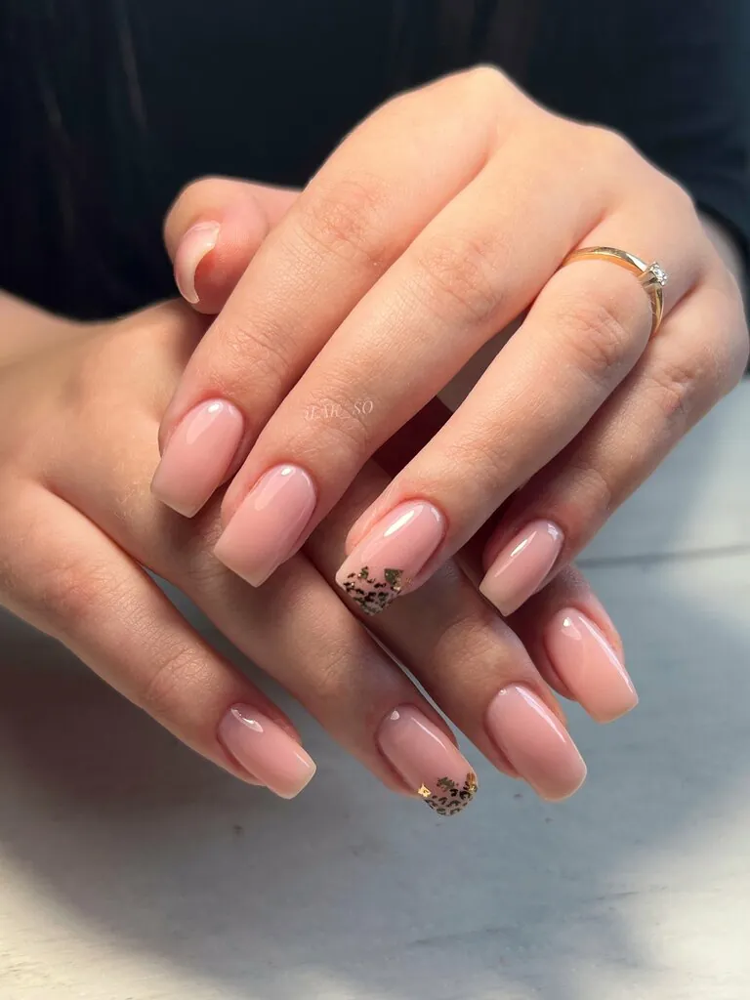
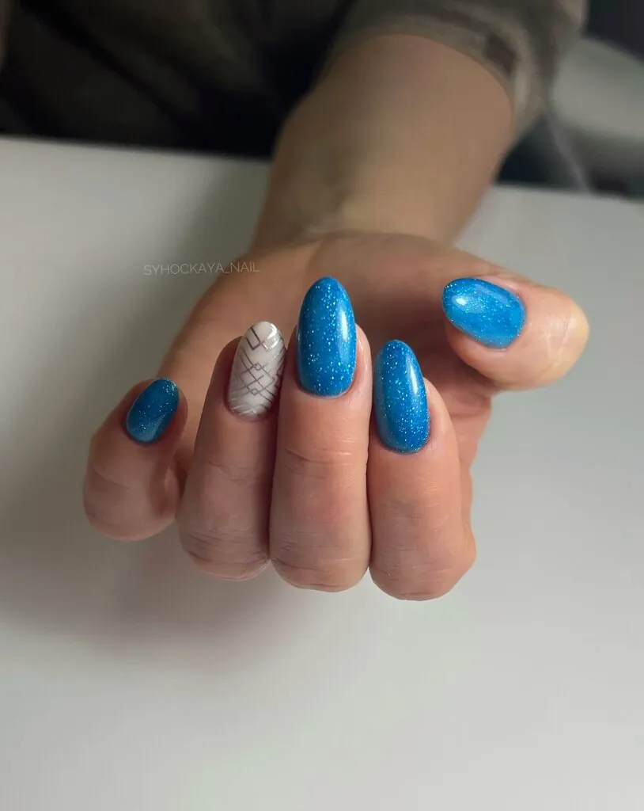
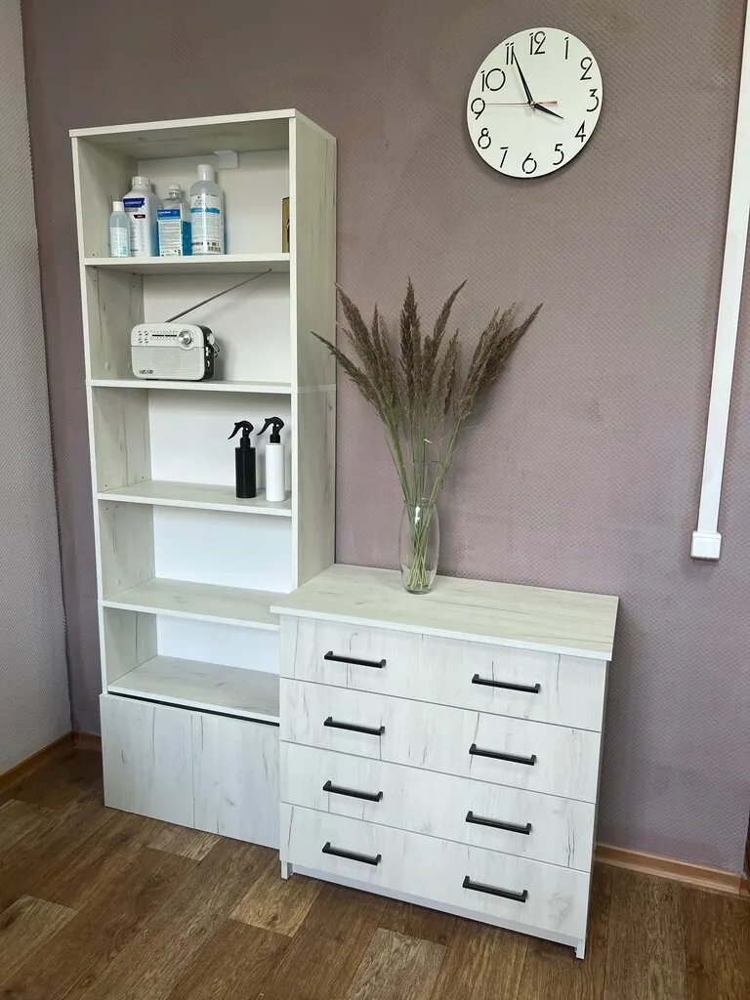
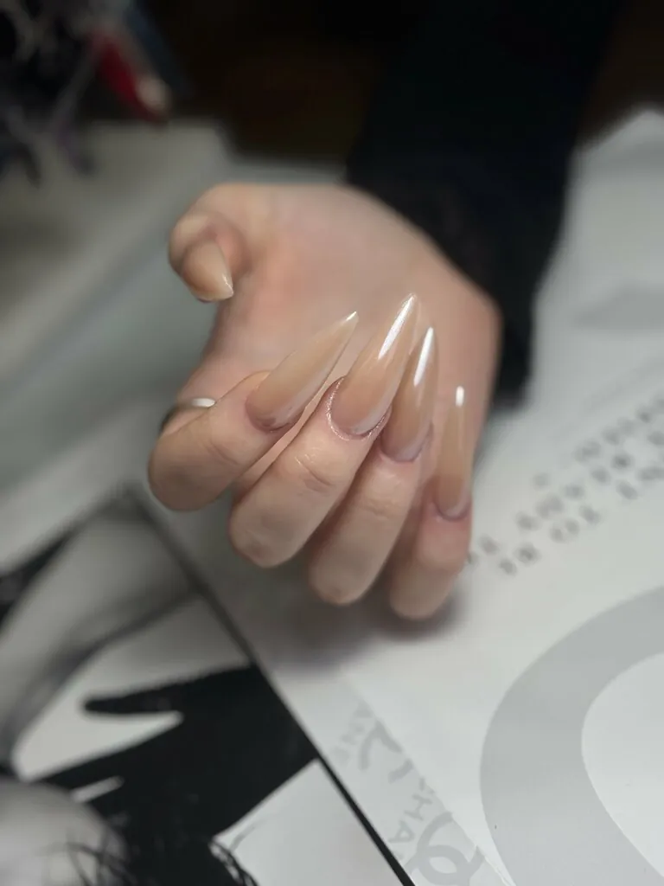
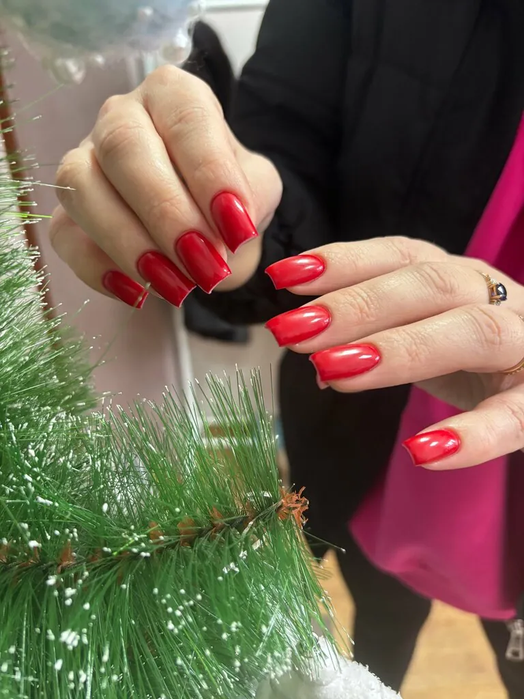
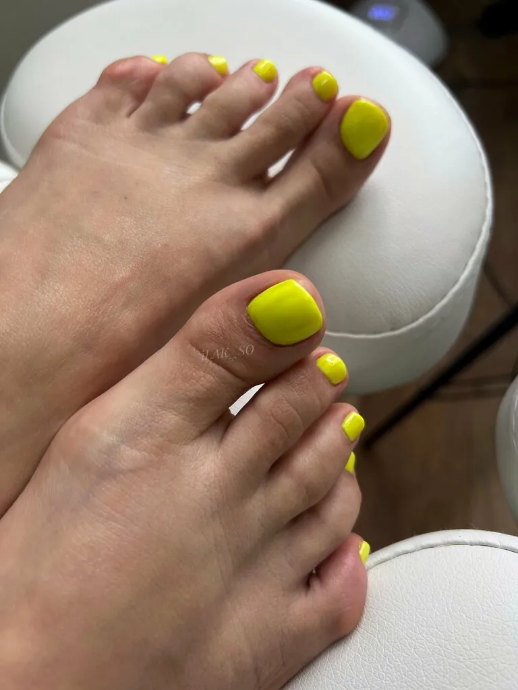
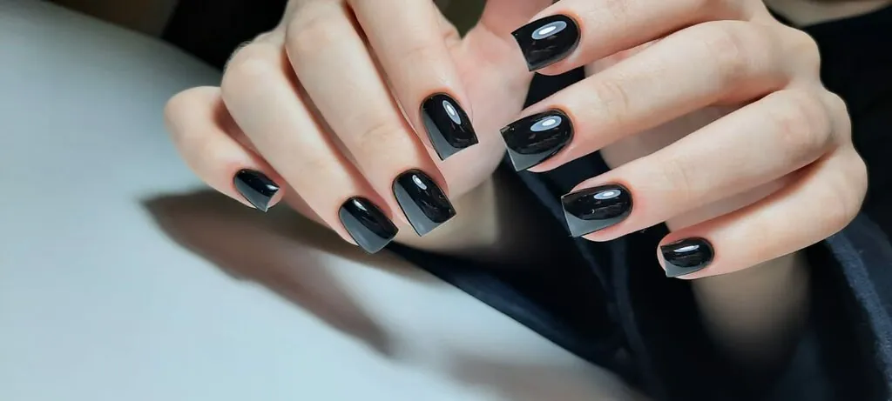
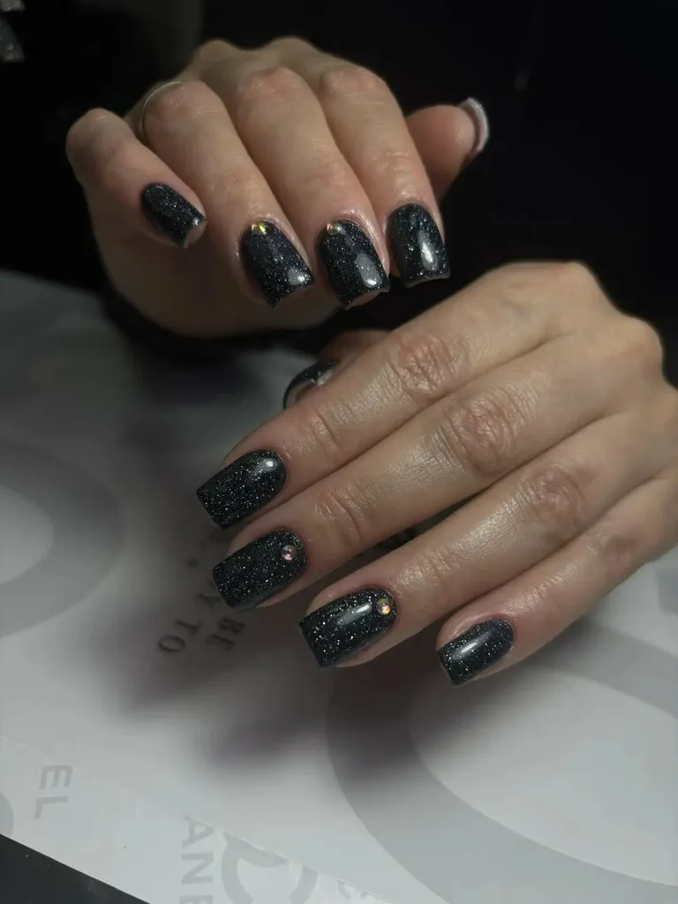
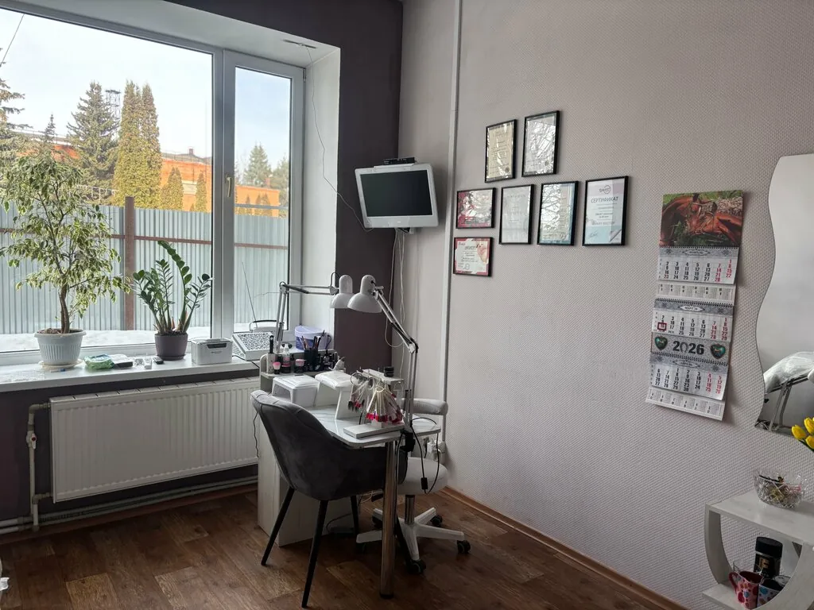
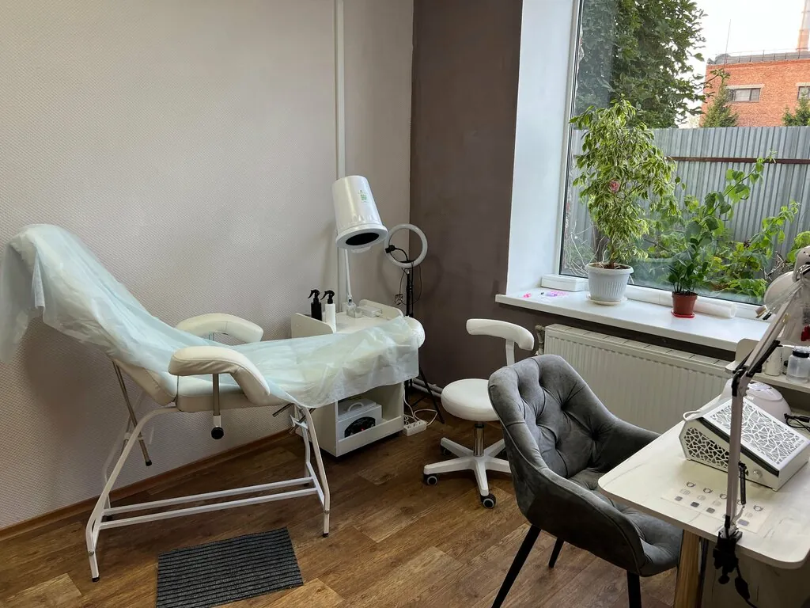

Держится 3–4 недели
Покрытие носится до следующей записи – без сколов, даже если руки много работают.
Ефремов · Московская Застава, 1 · ежедневно 10–20
Покрытие, которое доживает до следующей записи
Ольга принимает в кабинете на Московской Заставе: обработанные инструменты, аккуратное покрытие и гладкие пяточки после smart-педикюра. Записывайтесь в WhatsApp или по телефону.


Почему здесь
То, что клиентки отмечают в отзывах снова и снова.

Покрытие носится до следующей записи – без сколов, даже если руки много работают.
Инструменты обрабатываются после каждой клиентки, кабинет в порядке.
Инструменты все обрабатываются, требования САНПИНа соблюдаются.Таня, отзыв клиента
Smart-педикюр, после которого стопы долго остаются мягкими.
Пяточки очень гладкие долгое время, даже скользят по босоножкам.Анастасия С., отзыв клиента
Покрытие без толстых «плюшек», ровная форма.
Ни одного скола, все аккуратно, тонко и невероятно красиво!Юлия Применко, отзыв клиента
Мужской маникюр и педикюр – в прайсе отдельными строками.

Ноготки красивые и держатся положенные 4 недели
Таня, отзыв на Яндекс Картах
Цены
Прайс студии. Если нужен дизайн или ремонт ногтя, стоимость подскажет мастер.

Оплата наличными или переводом.
Работы
Однотонные покрытия, френч и яркий педикюр – снимки из студии.



Студия
Светлая комната с окном, педикюрное кресло, всё на своих местах.


Отзывы
Восторг за гранью! Это лучший салон, в котором я когда-либо была! Девочки, бегом сюда, если хотите, чтобы ваши ручки стали произведением искусства! Я просто влюблена в результат! Мастер Ольга — это настоящая фея, которая творит чудеса. С первой минуты чувствуешь себя не клиентом, а самой желанной гостьей. Огромное спасибо за идеальное покрытие, которое держится уже 3 недели и выглядит так, будто его сделали только вчера. Ни одного скола, все аккуратно, тонко и невероятно красиво! Цены при этом очень приятные. Я нашла свой идеальный салон и теперь ни ногой к другим! Спасибо вам за красоту и хорошее настроение! 💖
С Олей, как мастером, знакома больше двух лет. Мне нравится как она работает, всё четко и аккуратно. Ноготки красивые и держатся положенные 4 недели, не смотря на все нагрузки, что им приходится испытывать у меня. )) Качество материала на высоте. Инструменты все обрабатываются, требования САНПИНа соблюдаются.
Всегда качественная работа и маникюр и педикюр!!! Пяточки очень гладкие долгое время, даже скользят по босоножкам. Уже давно хожу к мастеру Ольге. Всё нравится, рекомендую!
Была на маникюре у Ольги и педикюре, мне очень понравилось, аккуратно, а главное долго держалось все. Спасибо, теперь хожу постоянно
Всё отлично. Комфортная студия , отличный мастер.
Студия ногтевого сервиса Сухоцкой О. В.
Напишите в WhatsApp или позвоните: +7 (953) 436-89-36.
Запись
Напишите в WhatsApp или ВКонтакте, позвоните – или оставьте номер, Ольга перезвонит.
Оставьте телефон – мастер подберёт удобное время.